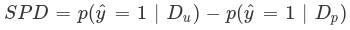
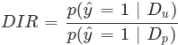
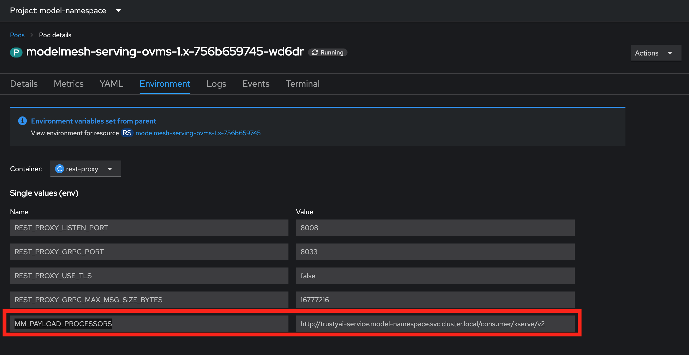
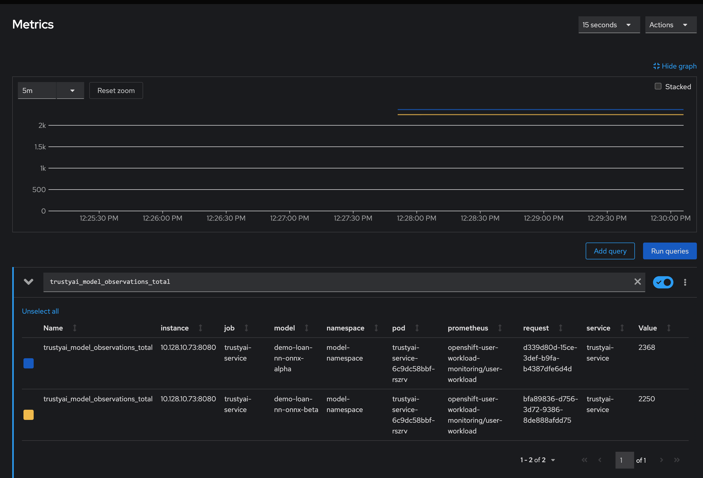

layout: docs title: Monitoring Data Science Models permalink: /docs/monitoring-data-science-models custom_css: asciidoc.css --- :upstream: :YEAR: 2024
Monitoring data science models
Overview of model monitoring
|
Important
|
Technology Preview features are not supported with Red Hat production service level agreements (SLAs) and might not be functionally complete. Red Hat does not recommend using them in production. These features provide early access to upcoming product features, enabling customers to test functionality and provide feedback during the development process. For more information about the support scope of Red Hat Technology Preview features, see Technology Preview Features Support Scope. |
To ensure that machine-learning models are transparent, fair, and reliable, data scientists can use TrustyAI in {productname-short} to monitor their data science models.
Data scientists can monitor their data science models in {productname-short} for the following metrics:
- Data drift
-
Detect changes in data over time by comparing the latest real-world data to the original training data. Comparing the data identifies shifts or deviations that could impact model performance, ensuring the model remains accurate and reliable.
- Explainability
-
Understand how your model makes its predictions and decisions.
Unresolved directive in monitoring-data-science-models.adoc - include::assemblies/configuring-trustyai.adoc[leveloffset=+1]
Unresolved directive in monitoring-data-science-models.adoc - include::assemblies/setting-up-trustyai-for-your-project.adoc[leveloffset=+1]
Monitoring model bias
As a data scientist, you might want to monitor your machine learning models for bias. This means monitoring for algorithmic deficiencies that might skew the outcomes or decisions that the model produces. Importantly, this type of monitoring helps you to ensure that the model is not biased against particular protected groups or features.
Open Data Hub provides a set of metrics that help you to monitor your models for bias. You can use the Open Data Hub interface to choose an available metric and then configure model-specific details such as a protected attribute, the privileged and unprivileged groups, the outcome you want to monitor, and a threshold for bias. You then see a chart of the calculated values for a specified number of model inferences.
Creating a bias metric
To monitor a deployed model for bias, you must first create bias metrics. When you create a bias metric, you specify details relevant to your model such as a protected attribute, privileged and unprivileged groups, a model outcome and a value that you want to monitor, and the acceptable threshold for bias.
You can create a bias metric for a model by using the Open Data Hub dashboard or by using the OpenShift command-line interface (CLI).
Creating a bias metric by using the dashboard
The following procedure describes how to use the Open Data Hub dashboard to create a bias metric for a model.
-
You are familiar with the bias metrics that Open Data Hub supports and how to interpret them.
-
You are familiar with the specific data set schema and understand the names and meanings of the inputs and outputs.
-
Your OpenShift cluster administrator has configured monitoring for the model serving platform, enabled the TrustyAI component in the Open Data Hub {install-package}, and installed the TrustyAI service for the data science project where the models are deployed.
-
You have a user token for authentication as described in Authenticating the TrustyAI service.
-
You have logged in to Open Data Hub.
-
Optional: To set the
TRUSTY_ROUTEvariable, follow these steps.-
In a terminal window, log in to the OpenShift cluster where Open Data Hub is deployed.
oc login
-
Set the
TRUSTY_ROUTEvariable to the external route for the TrustyAI service pod.TRUSTY_ROUTE=https://$(oc get route/trustyai-service --template={{.spec.host}})
-
-
In the left menu of the Open Data Hub dashboard, click Model Serving.
-
On the Deployed models page, select your project from the drop-down list.
-
Click the name of the model that you want to configure bias metrics for.
-
On the metrics page for the model, click the Model bias tab.
-
Click Configure.
-
In the Configure bias metrics dialog, complete the following steps to configure bias metrics:
-
In the Metric name field, type a unique name for your bias metric. Note that you cannot change the name of this metric later.
-
From the Metric type list, select one of the metrics types that are available in Open Data Hub.
-
In the Protected attribute field, type the name of an attribute in your model that you want to monitor for bias.
TipYou can use a curlcommand to query the metadata endpoint and view input attribute names and values. For example:curl -H "Authorization: Bearer $TOKEN" $TRUSTY_ROUTE/info | jq ".[0].data.inputSchema" -
In the Privileged value field, type the name of a privileged group for the protected attribute that you specified.
-
In the Unprivileged value field, type the name of an unprivileged group for the protected attribute that you specified.
-
In the Output field, type the name of the model outcome that you want to monitor for bias.
TipYou can use a curlcommand to query the metadata endpoint and view output attribute names and values. For example:curl -H "Authorization: Bearer $TOKEN" $TRUSTY_ROUTE/info | jq ".[0].data.outputSchema" -
In the Output value field, type the value of the outcome that you want to monitor for bias.
-
In the Violation threshold field, type the bias threshold for your selected metric type. This threshold value defines how far the specified metric can be from the fairness value for your metric, before the model is considered biased.
-
In the Metric batch size field, type the number of model inferences that Open Data Hub includes each time it calculates the metric.
-
-
Ensure that the values you entered are correct.
NoteYou cannot edit a model bias metric configuration after you create it. Instead, you can duplicate a metric and then edit (configure) it; however, the history of the original metric is not applied to the copy.
-
Click Configure.
-
The Bias metric configuration page shows the bias metrics that you configured for your model.
To view metrics, on the Bias metric configuration page, click View metrics in the upper-right corner.
Creating a bias metric by using the CLI
The following procedure describes how to use the OpenShift command-line interface (CLI) to create a bias metric for a model.
-
You are familiar with the bias metrics that Open Data Hub supports and how to interpret them.
-
You are familiar with the specific data set schema and understand the names and meanings of the inputs and outputs.
-
Your OpenShift cluster administrator has configured monitoring for the model serving platform, enabled the TrustyAI component in the Open Data Hub {install-package}, and installed the TrustyAI service for the data science project where the models are deployed.
-
You installed the OpenShift command line interface (
oc) as described in Get Started with the CLI. -
You have a user token for authentication as described in Authenticating the TrustyAI service.
-
In a terminal window, log in to the OpenShift cluster where Open Data Hub is deployed.
oc login
-
Set the
TRUSTY_ROUTEvariable to the external route for the TrustyAI service pod.TRUSTY_ROUTE=https://$(oc get route/trustyai-service --template={{.spec.host}}) -
Optionally, get the full list of TrustyAI service endpoints and payloads.
curl -H "Authorization: Bearer $TOKEN" --location $TRUSTY_ROUTE/q/openapi
-
Configure bias metrics by running a command that uses the following syntax and payload structure:
Syntax:
curl -sk -H "Authorization: Bearer $TOKEN" -X POST --location $TRUSTY_ROUTE/metrics/spd/request \ --header 'Content-Type: application/json' \ --data <payload>
Payload structure:
modelId-
The name of the model to query.
protectedAttribute-
The name of the feature that distinguishes the groups that you are checking for fairness.
privilegedAttribute-
The suspected favored (positively biased) class.
unprivilegedAttribute-
The suspected unfavored (negatively biased) class.
outcomeName-
The name of the output that provides the output you are examining for fairness.
favorableOutcome-
The value of the
outcomeNameoutput that describes the favorable or desired model prediction. batchSize-
The number of previous inferences to include in the calculation.
For example:
curl -sk -H "Authorization: Bearer $TOKEN" -X POST --location $TRUSTY_ROUTE/metrics/group/fairness/spd/ \
--header 'Content-Type: application/json' \
--data "{
\"modelId\": \"demo-loan-nn-onnx-alpha\",
\"protectedAttribute\": \"Is Male-Identifying?\",
\"privilegedAttribute\": 1.0,
\"unprivilegedAttribute\": 0.0,
\"outcomeName\": \"Will Default?\",
\"favorableOutcome\": 0,
\"batchSize\": 5000
}"
The bias metrics request returns an output similar to the following:
{
"timestamp":"2023-10-24T12:06:04.586+00:00",
"type":"metric",
"value":-0.0029676404469311524,
"namedValues":null,
"specificDefinition":"The SPD of -0.002968 indicates that the likelihood of Group:Is Male-Identifying?=1.0 receiving Outcome:Will Default?=0 was -0.296764 percentage points lower than that of Group:Is Male-Identifying?=0.0.",
"name":"SPD",
"id":"d2707d5b-cae9-41aa-bcd3-d950176cbbaf",
"thresholds":{"lowerBound":-0.1,"upperBound":0.1,"outsideBounds":false}
}
The specificDefinition field helps you understand the real-world interpretation of these metric values. For this example, the model is fair over the Is Male-Identifying? field, with the rate of positive outcome only differing by about -0.3%.
Duplicating a bias metric
If you want to edit an existing metric, you can duplicate (copy) it in the Open Data Hub interface and then edit the values in the copy. However, note that the history of the original metric is not applied to the copy.
-
You are familiar with the bias metrics that Open Data Hub supports and how to interpret them.
-
You are familiar with the specific data set schema and understand the names and meanings of the inputs and outputs.
-
You have logged in to Open Data Hub.
-
There is an existing bias metric that you want to duplicate.
-
In the left menu of the Open Data Hub dashboard, click Model Serving.
-
On the Deployed models page, click the name of the model with the bias metric that you want to duplicate.
-
On the metrics page for the model, click the Model bias tab.
-
Click Configure.
-
On the Bias metric configuration page, click the action menu (⋮) next to the metric that you want to copy and then click Duplicate.
-
In the Configure bias metric dialog, follow these steps:
-
In the Metric name field, type a unique name for your bias metric. Note that you cannot change the name of this metric later.
-
Change the values of the fields as needed. For a description of these fields, see Creating a bias metric by using the dashboard.
-
-
Ensure that the values you entered are correct, and then click Configure.
-
The Bias metric configuration page shows the bias metrics that you configured for your model.
To view metrics, on the Bias metric configuration page, click View metrics in the upper-right corner.
Deleting a bias metric
You can delete a bias metric for a model by using the Open Data Hub dashboard or by using the OpenShift command-line interface (CLI).
Deleting a bias metric by using the dashboard
The following procedure describes how to use the Open Data Hub dashboard to delete a bias metric for a model.
-
You have logged in to Open Data Hub.
-
There is an existing bias metric that you want to delete.
-
In the left menu of the Open Data Hub dashboard, click Model Serving.
-
On the Deployed models page, click the name of the model with the bias metric that you want to delete.
-
On the metrics page for the model, click the Model bias tab.
-
Click Configure.
-
Click the action menu (⋮) next to the metric that you want to delete and then click Delete.
-
In the Delete bias metric dialog, type the metric name to confirm the deletion.
NoteYou cannot undo deleting a bias metric.
-
Click Delete bias metric.
-
The Bias metric configuration page does not show the bias metric that you deleted.
Deleting a bias metric by using the CLI
The following procedure describes how to use the OpenShift command-line interface (CLI) to delete a bias metric for a model.
-
You have logged in to Open Data Hub.
-
There is an existing bias metric that you want to delete.
-
You have a user token for authentication as described in Authenticating the TrustyAI service.
-
In a terminal window, log in to the OpenShift cluster where Open Data Hub is deployed.
oc login
-
Optional: To list all currently active requests for a metric, use
GET /metrics/{{metric}}/requests. For example, to list all currently scheduled SPD metrics, type:curl -H "Authorization: Bearer $TOKEN" -X GET --location "$TRUSTY_ROUTE/metrics/spd/requests"
-
To delete a metric, send an HTTP
DELETErequest to the/metrics/$METRIC/requestendpoint to stop the periodic calculation, including the id of periodic task that you want to cancel in the payload. For example:curl -H "Authorization: Bearer $TOKEN" -X DELETE --location "$TRUSTY_ROUTE/metrics/spd/request" \ -H "Content-Type: application/json" \ -d "{ \"requestId\": \"3281c891-e2a5-4eb3-b05d-7f3831acbb56\" }"
Use GET /metrics/{{metric}}/requests to list all currently active requests for the metric and verify the metric that you deleted is not shown. For example:
curl -H "Authorization: Bearer $TOKEN" -X GET --location "$TRUSTY_ROUTE/metrics/spd/requests"
Viewing bias metrics for a model
After you configure your model for bias monitoring, you can use the Open Data Hub dashboard to view and update the metrics that you configured.
-
You configured bias metrics for your model as described in Creating a bias metric.
-
In the Open Data Hub dashboard, click Model Serving.
-
On the Deployed models page, click the name of a model that you want to view bias metrics for.
-
To update the metrics shown on the page, follow these steps:
-
In the Metrics to display section, use the Select a metric list to select a metric to show on the page.
NoteEach time you select a metric to show on the page, an additional Select a metric list appears. This enables you to show multiple metrics on the page. -
From the Time range list in the upper-right corner, select a value.
-
From the Refresh interval list in the upper-right corner, select a value.
The metrics page shows the metrics that you selected.
-
-
Optional: To remove one or more metrics from the page, in the Metrics to display section, perform one of the following actions:
-
To remove an individual metric, click the cancel icon (✖) next to the metric name.
-
To remove all metrics, click the cancel icon (✖) in the Select a metric list.
-
-
Optional: To return to configuring bias metrics for the model, on the metrics page, click Configure in the upper-right corner.
-
The metrics page shows the metrics selections that you made.
Supported bias metrics
Open Data Hub supports the following bias metrics.
- Statistical Parity Difference
-
Statistical Parity Difference (SPD) is the difference in the probability of a favorable outcome prediction between unprivileged and privileged groups. The formal definition of SPD is the following:
-
ŷ = 1 is the favorable outcome.
-
Dᵤ and Dₚ are the unprivileged and privileged group data.
You can interpret SPD values as follows:
-
A value of
0means that the model is behaving fairly for a selected attribute (for example, race, gender). -
A value in the range
-0.1to0.1means that the model is reasonably fair for a selected attribute. Instead, you can attribute the difference in probability to other factors, such as the sample size. -
A value outside the range
-0.1to0.1indicates that the model is unfair for a selected attribute. -
A negative value indicates that the model has bias against the unprivileged group.
-
A positive value indicates that the model has bias against the privileged group.
-
- Disparate Impact Ratio
-
Disparate Impact Ratio (DIR) is the ratio of the probability of a favorable outcome prediction for unprivileged groups to that of privileged groups. The formal definition of DIR is the following:
-
ŷ = 1 is the favorable outcome.
-
Dᵤ and Dₚ are the unprivileged and privileged group data.
The threshold to identify bias depends on your own criteria and specific use case.
For example, if your threshold for identifying bias is represented by a DIR value below
0.8or above1.2, you can interpret the DIR values as follows:-
A value of
1means that the model is fair for a selected attribute. -
A value of between
0.8and1.2means that the model is reasonably fair for a selected attribute. -
A value below
0.8or above1.2indicates bias.
-
Unresolved directive in monitoring-data-science-models.adoc - include::assemblies/monitoring-data-drift.adoc[leveloffset=+1]
Unresolved directive in monitoring-data-science-models.adoc - include::assemblies/using-explainability.adoc[leveloffset=+1]
Bias monitoring tutorial - Gender bias example
Step-by-step guidance for using TrustyAI in Open Data Hub to monitor machine learning models for bias.
Introduction
Ensuring that your machine learning models are fair and unbiased is essential for building trust with your users. Although you can assess fairness during model training, it is only in deployment that your models use real-world data. Even if your models are unbiased on training data, they can exhibit dangerous biases in real-world scenarios. Therefore, it is crucial to monitor your models for fairness during their real-world deployment.
In this tutorial, you learn how to monitor models for bias. You will use two example models to complete the following tasks:
-
Deploy the models by using multi-model serving.
-
Send training data to the models.
-
Examine the metadata for the models.
-
Check model fairness.
-
Schedule and check fairness and identity metric requests.
-
Simulate real-world data.
About the example models
For this tutorial, your role is a DevOps engineer for a credit lending company. The company’s data scientists have created two candidate neural network models to predict whether a borrower will default on a loan. Both models make predictions based on the following information from the borrower’s application:
-
Number of Children
-
Total Income
-
Number of Total Family Members
-
Is Male-Identifying?
-
Owns Car?
-
Owns Realty?
-
Is Partnered?
-
Is Employed?
-
Lives with Parents?
-
Age (in days)
-
Length of Employment (in days)
As the DevOps engineer, your task is to verify that the models are not biased against the Is Male-Identifying? gender field. To complete this task, you can monitor the models using the Statistical Parity Difference (SPD) metric, which reports whether there is a difference between how often male-identifying and non-male-identifying applicants are given favorable predictions (that is, they are predicted to pay off their loans). An ideal SPD metric is 0, meaning both groups are equally likely to receive a positive outcome. However, an SPD between -0.1 and 0.1 also indicates fairness, as it reflects only a +/-10% variation between the groups.
Setting up your environment
To set up your environment for this tutorial, complete the following tasks:
-
Download tutorial files from the trustyai-explainability repository.
-
Log in to the OpenShift cluster from the command line.
-
Configure monitoring for the model serving platform.
-
Enable the TrustyAI component in the Open Data Hub Operator.
-
Set up a project.
-
Authenticate the TrustyAI service.
-
The Open Data Hub Operator is installed on your {openshift-platform} cluster.
-
You have cluster administrator privileges for your {openshift-platform} cluster.
-
You have downloaded and installed the OpenShift command-line interface (CLI). See Installing the OpenShift CLI.
Downloading tutorial files
-
Go to https://github.com/trustyai-explainability/odh-trustyai-demos/tree/main.
-
Click the Code button and then click Download ZIP to download the repository.
-
Extract the downloaded repository files.
Logging in to the OpenShift cluster from the command line
-
Obtain the command for logging in to the OpenShift cluster from the command line:
-
In the upper-right corner of the {openshift-platform} web console, click your user name and select Copy login command.
-
Log in with your credentials and then click Display token.
-
Copy the Log in with this token command, which has the following syntax:
$ oc login --token=<token> --server=<openshift_cluster_url>
-
-
In a terminal window, paste and run the login command.
Configuring monitoring for the model serving platform
To enable monitoring on user-defined projects, you must configure monitoring for the model serving platform.
-
Run the following command from the directory containing the downloaded tutorial files (
odh-trustyai-demos-main):oc apply -f 1-Installation/resources/enable_uwm.yaml -
To configure monitoring to hold metric data for 15 days, run the following command from the directory containing the downloaded tutorial files (
odh-trustyai-demos-main):oc apply -f 1-Installation/resources/uwm_configmap.yaml
For more information, see Configuring monitoring for the multi-model serving platform.
Enabling the TrustyAI component
To allow your data scientists to use model monitoring, you must enable the TrustyAI component in Open Data Hub.
-
You have logged in to {openshift-platform} with the
cluster-adminrole. -
You have access to the data science cluster.
-
You have installed Open Data Hub.
-
In the {openshift-platform} console, click Operators → Installed Operators.
-
Search for the Open Data Hub Operator, and then click the Operator name to open the Operator details page.
-
Click the Data Science Cluster tab.
-
Click the default instance name (for example, default-dsc) to open the instance details page.
-
Click the YAML tab to show the instance specifications.
-
In the
spec:componentssection, set themanagementStatefield for thetrustyaicomponent toManaged:trustyai: managementState: Managed -
Click Save.
Check the status of the trustyai-service-operator pod as follows:
-
In the {openshift-platform} console, from the Project list, select opendatahub.
-
Click Workloads → Deployments.
-
Search for the trustyai-service-operator-contoller-manager deployment. Check the status as follows:
-
Click the deployment name to open the deployment details page.
-
Click the Pods tab.
-
Check the pod status.
When the status of the trustyai-service-operator-controller-manager-<pod-id> pod is Running, the pod is ready to use.
-
Setting up a project
-
To create a new project named
model-namespace, run the following command from the directory containing the downloaded tutorial files (odh-trustyai-demos-main):oc new-project model-namespace -
Prepare the
model-namespaceproject for multi-model serving:oc label namespace model-namespace "modelmesh-enabled=true" --overwrite=trueNoteModel monitoring with TrustyAI is only available on the ModelMesh-based multi-model serving platform. Model monitoring with TrustyAI is unavailable on the KServe-based single-model serving platform.
Authenticating the TrustyAI service
TrustyAI endpoints are authenticated with a Bearer token. To obtain this token and set a variable (TOKEN) to use later, run the following command:
export TOKEN=$(oc whoami -t)Deploying models
To deploy the models for this tutorial, run the following commands from the directory containing the downloaded tutorial files (odh-trustyai-demos-main).
-
Navigate to the
model-namespaceproject you created:oc project model-namespace -
Deploy the model’s storage container:
oc apply -f 2-BiasMonitoring/resources/model_storage_container.yaml -
Deploy the OVMS 1.x serving runtime:
oc apply -f 2-BiasMonitoring/resources/ovms-1.x.yaml -
Deploy the first model:
oc apply -f 2-BiasMonitoring/resources/model_alpha.yaml -
Deploy the second model:
oc apply -f 2-BiasMonitoring/resources/model_beta.yaml
-
In the {openshift-platform} console, click Workloads → Pods.
-
Confirm that there are four pods:
-
minio -
modelmesh-serving-ovms-1.x-xxxxxxxxxx-xxxxx -
modelmesh-serving-ovms-1.x-xxxxxxxxxx-xxxxx -
trustyai-service-xxxxxxxxxx-xxxxxWhen the TrustyAI service has registered the deployed models, you will see the
modelmesh-serving-ovms-1.x-xxxxxpods get redeployed.
-
-
To verify that TrustyAI has registered the models:
-
Select one of the
modelmesh-serving-ovms-1.x-xxxxxpods. -
Click the Environment tab and confirm that the
MM_PAYLOAD_PROCESSORSfield is set.
-
Sending training data to the models
Pass the training data through the models to be able to compute baseline fairness values.
-
In a terminal window, run the following command from the directory containing the downloaded tutorial files (
odh-trustyai-demos-main):for batch in 0 250 500 750 1000 1250 1500 1750 2000 2250; do 2-BiasMonitoring/scripts/send_data_batch 2-BiasMonitoring/data/training/$batch.json doneThis process can take several minutes.
The script returns verification messages indicating whether TrustyAI is receiving the data, but you can also verify in the cluster metrics:
-
In the {openshift-platform} web console, click Observe → Metrics.
-
In the Expression field, enter
trustyai_model_observations_totaland click Run Queries.You should see both models listed with around 2250 inferences each, indicating that TrustyAI has cataloged enough inputs and outputs to begin analysis.
 -
Optional: After running a query, you can select a time range and refresh interval.
-
From the Time range list, select 5 minutes.
-
From the Refresh interval list, select 15 seconds.
-
Examining TrustyAI’s model metadata
You can verify that TrustyAI can access the models by using the /info endpoint.
-
Find the route to the TrustyAI service:
TRUSTY_ROUTE=https://$(oc get route/trustyai-service --template={{.spec.host}}); echo $TRUSTY_ROUTE -
Query the
/infoendpoint:curl -H "Authorization: Bearer ${TOKEN}" $TRUSTY_ROUTE/info | jq
A JSON file is generated with the following information for each model:
-
The names, data types, and positions of fields in the input and output.
-
The observed values that these fields take.
-
The total number of input-output pairs observed.
For an example output file, see the odh-trustyai-demos-main/2-BiasMonitoring/scripts/info_response.json file in your downloaded tutorial files.
Labeling data fields
You can apply name mappings to your inputs and outputs for more meaningful field names by sending a POST request to the /info/names endpoint.
For this tutorial, run the following command from the directory containing the downloaded tutorial files (odh-trustyai-demos-main):
2-BiasMonitoring/scripts/apply_name_mapping.shFor general steps, see Labeling data fields.
To understand the payload structure, see the odh-trustyai-demos-main/2-BiasMonitoring/scripts/apply_name_mapping.sh file in your downloaded tutorial files.
Checking model fairness
-
To compute the model’s cumulative fairness up to this point, you can check the
/metrics/group/fairness/spdendpoint:echo -e "=== MODEL ALPHA ===" curl -sk -H "Authorization: Bearer ${TOKEN}" -X POST --location $TRUSTY_ROUTE/metrics/group/fairness/spd/ \ --header 'Content-Type: application/json' \ --data "{ \"modelId\": \"demo-loan-nn-onnx-alpha\", \"protectedAttribute\": \"Is Male-Identifying?\", \"privilegedAttribute\": 1.0, \"unprivilegedAttribute\": 0.0, \"outcomeName\": \"Will Default?\", \"favorableOutcome\": 0, \"batchSize\": 5000 }" | jq echo -e "\n\n=== MODEL BETA ===" curl -sk -H "Authorization: Bearer ${TOKEN}" -X POST --location $TRUSTY_ROUTE/metrics/group/fairness/spd \ --header 'Content-Type: application/json' \ --data "{ \"modelId\": \"demo-loan-nn-onnx-beta\", \"protectedAttribute\": \"Is Male-Identifying?\", \"privilegedAttribute\": 1.0, \"unprivilegedAttribute\": 0.0, \"outcomeName\": \"Will Default?\", \"favorableOutcome\": 0, \"batchSize\": 5000 }" | jq echo
The payload structure is as follows:
-
modelId: The name of the model to query. -
protectedAttribute: The name of the feature that distinguishes the groups that you are checking for fairness over. -
privilegedAttribute: The value of theprotectedAttributethat describes the suspected favored (positively biased) class. -
unprivilegedAttribute: The value of theprotectedAttributethat describes the suspected unfavored (negatively biased) class. -
outcomeName: The name of the output that provides the output you are examining for fairness. -
favorableOutcome: The value of theoutcomeNameoutput that describes the favorable model prediction. -
batchSize: The number of previous inferences to include in the calculation.
Confirm that you see outputs similar to the following examples:
- Model Alpha
=== MODEL ALPHA ===
{
"timestamp": "2024-07-25T16:26:50.412+00:00",
"type": "metric",
"value": 0.003056835834369387,
"namedValues": null,
"specificDefinition": "The SPD of 0.003057 indicates that the likelihood of Group:Is Male-Identifying?=[1.0] receiving Outcome:Will Default?=[0] was 0.305684 percentage points higher than that of Group:Is Male-Identifying?=[0.0].",
"name": "SPD",
"id": "542bd51e-dd2f-40f6-947f-c1c22bd71765",
"thresholds": {
"lowerBound": -0.1,
"upperBound": 0.1,
"outsideBounds": false
}
}- Model Beta
=== MODEL BETA ===
{
"timestamp": "2024-07-25T16:26:50.648+00:00",
"type": "metric",
"value": 0.029078518433627354,
"namedValues": null,
"specificDefinition": "The SPD of 0.029079 indicates that the likelihood of Group:Is Male-Identifying?=[1.0] receiving Outcome:Will Default?=[0] was 2.907852 percentage points higher than that of Group:Is Male-Identifying?=[0.0].",
"name": "SPD",
"id": "df292f06-9255-4158-8b02-4813a8777b7b",
"thresholds": {
"lowerBound": -0.1,
"upperBound": 0.1,
"outsideBounds": false
}
}The specificDefinition field is important in understanding the real-world interpretation of these metric values; you can see that both model Alpha and Beta are fair over the Is Male-Identifying field, with the two groups' rates of positive outcomes only differing by -0.3% for model Alpha and 2.8% for model Beta.
Scheduling a fairness metric request
While the models are fair over the training data, you also want to ensure that they remain fair over real-world inference data. To monitor their fairness, you can schedule a metric request to compute at recurring intervals throughout deployment by passing the same payloads to the /metrics/group/fairness/spd/request endpoint.
-
In a terminal window, run the following commands from the directory containing the downloaded tutorial files (
odh-trustyai-demos-main):echo -e "\n\n=== MODEL ALPHA ===\n" curl -sk -H "Authorization: Bearer ${TOKEN}" -X POST --location $TRUSTY_ROUTE/metrics/group/fairness/spd/request \ --header 'Content-Type: application/json' \ --data "{ \"modelId\": \"demo-loan-nn-onnx-alpha\", \"protectedAttribute\": \"Is Male-Identifying?\", \"privilegedAttribute\": 1.0, \"unprivilegedAttribute\": 0.0, \"outcomeName\": \"Will Default?\", \"favorableOutcome\": 0, \"batchSize\": 5000 }" echo -e "\n\n=== MODEL BETA ===\n" curl -sk -H "Authorization: Bearer ${TOKEN}" -X POST --location $TRUSTY_ROUTE/metrics/group/fairness/spd/request \ --header 'Content-Type: application/json' \ --data "{ \"modelId\": \"demo-loan-nn-onnx-beta\", \"protectedAttribute\": \"Is Male-Identifying?\", \"privilegedAttribute\": 1.0, \"unprivilegedAttribute\": 0.0, \"outcomeName\": \"Will Default?\", \"favorableOutcome\": 0, \"batchSize\": 5000 }" echo
These commands return the IDs of the created requests, which you can use later to delete these scheduled requests.
-
In the {openshift-platform} web console, click Observe → Metrics.
-
In the Expression field, enter
trustyai_spdand click Run Queries. -
Optional: After running a query, you can select a time range and refresh interval.
-
From the Time range list, select 5 minutes.
-
From the Refresh interval list, select 15 seconds.
-
Scheduling an identity metric request
You can monitor the average values of various data fields over time to see the average ratio of loan-payback to loan-default predictions and the average ratio of male-identifying to non-male-identifying applicants. To monitor the average values, you create an identity metric request by sending a POST request to the /metrics/identity/request endpoint.
-
In a terminal window, run the following command from the directory containing the downloaded tutorial files (
odh-trustyai-demos-main):for model in "demo-loan-nn-onnx-alpha" "demo-loan-nn-onnx-beta"; do for field in "Is Male-Identifying?" "Will Default?"; do curl -sk -H "Authorization: Bearer ${TOKEN}" -X POST --location $TRUSTY_ROUTE/metrics/identity/request \ --header 'Content-Type: application/json' \ --data "{ \"columnName\": \"$field\", \"batchSize\": 250, \"modelId\": \"$model\" }" echo -e done done
The payload structure is as follows:
-
columnName: The name of the field to compute the averaging over. -
batchSize: The number of previous inferences to include in the average-value calculation. -
modelId: The name of the model to query.
-
In the {openshift-platform} web console, click Observe → Metrics.
-
In the Expression field, enter
trustyai_identityand click Run Queries. -
Optional: After running a query, you can select a time range and refresh interval.
-
From the Time range list, select 5 minutes.
-
From the Refresh interval list, select 15 seconds.
-
Simulating real world data
Now that you have scheduled your fairness and identify metric requests, you can send some "real world" data through your models to see if they remain fair.
-
In a terminal window, run the following command from the directory containing the downloaded tutorial files (
odh-trustyai-demos-main):for batch in "01" "02" "03" "04" "05" "06" "07" "08"; do ./2-BiasMonitoring/scripts/send_data_batch 2-BiasMonitoring/data/batch_$batch.json sleep 5 done
-
In the {openshift-platform} web console, click Observe → Metrics and watch the SPD and identity metric request values change.
Reviewing the results
Are the models biased?
The two models have drastically different fairness levels when applied to real-world data. Model Alpha (blue) stayed within the "acceptably fair" range between -0.1 and 0.1, ending around 0.09. However, Model Beta (yellow) plummeted out of the fair range, ending at -0.274. This indicates that non-male-identifying applicants were 27% less likely to receive a favorable outcome from Model Beta compared to male-identifying applicants.
To explore this further, you can analyze your identity metrics, starting by looking at the inbound ratio of male-identifying to non-male-identifying applicants:
In the training data, the ratio between male and non-male was around 0.8, but in the real-world data, it dropped to 0, meaning all applicants were non-male. This is a strong indicator that the training data did not match the real-world data, which is likely to indicate poor or biased model performance.
How does the production data compare to the training data?
Even though Model Alpha (green) was only exposed to non-male applicants, it still provided varying outcomes to the various applicants, predicting "will-default" in about 25% of cases. In contrast, Model Beta (purple) predicted "will-default" 100% of the time, meaning it predicted that every non-male applicant would default on their loan. This suggests that Model Beta is performing poorly on the real-world data or has encoded a systematic bias from its training, leading to the assumption that all non-male applicants will default.
These examples highlight the critical importance of monitoring bias in production. Models that are equally fair during training can perform very differently when applied to real-world data, with hidden biases emerging only in actual use. By using TrustyAI to detect these biases early, you can safeguard against the potential harm caused by biased models in production.